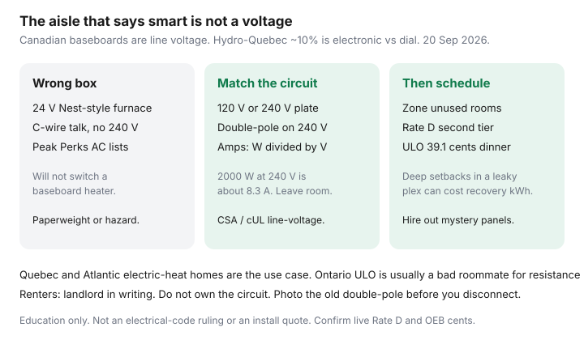

Utilities · Canada
Line-voltage smart thermostats for Canadian baseboard heat: what to know before you buy
Shoppers buy a Nest-shaped box because the aisle said “smart,” then discover the baseboard still has 240 volts in the wall. The 24-volt furnace thermostat is the wrong product. It will not dim the heat. In the worst case it is a fire and a warranty argument. Line-voltage stats are a different aisle — and in a lot of Canadian apartments they are the whole heating control.
This is a Canadian baseboard buyer’s filter: voltage, pole count, amperage, and when you hire an electrician. Savings tactics live in cut baseboard costs. If you only wanted a furnace-style schedule, start with are smart thermostats worth it instead.
Disclosure: Line-voltage smart thermostats (Mysa, Sinopé, and similar) are an offer type. Saving Optimizer may earn a commission if we later add partner links. We do not currently claim thermostat-brand, Hydro-Québec, or electrician partnerships. This is education — not an electrical-code ruling or an install quote.
Key takeaways
- Most Canadian baseboards are line voltage (120 or 240 V). A common Nest / ecobee 24 V furnace model is the wrong box unless the manufacturer sells an explicit line-voltage SKU.
- Match voltage, single- vs double-pole, and amp rating to the circuit. A 2,000 W 240 V heater is about 8.3 A; two heaters on one 20 A circuit need a stat that can switch that load.
- Double-pole breaks both hots — the usual Canadian 240 V product. Single-pole can leave a leg live. If you are not sure, that is an electrician question, not a weekend guess.
- Hydro-Québec Energy Wise: swapping dial stats for electronic ones can cut about 10% of annual heating cost — a schedule you keep, not the Wi-Fi logo.
- Room-by-room control is the kWh play. ULO’s 39.1 ¢ dinner block and Rate D’s second tier (11.142 ¢ from 1 Apr 2026) both punish recovery blasts.
Why standard Nest-style 24V stats do not work on many baseboards
A gas furnace or most central heat pumps uses a 24-volt control circuit. The thermostat is a low-voltage switch that tells a relay to run the blower. A baseboard is the heater. The thermostat sits in the 120 or 240 volt feed and interrupts that current. Put a 24 V board on that feed and you have a paperweight — or a hazard.
Some brands sell both. The box that looks like a Nest in a U.S. ad is almost never the line-voltage SKU. Read the spec sheet for “line voltage,” “120/240 V,” or “electric baseboard.” If it mentions a C-wire and a furnace, walk away from the baseboard aisle.

Amperage, double-pole, and electrician requirements
| Check | What you are matching | Typical miss |
|---|---|---|
| Voltage | 120 V or 240 V on the heater nameplate | Buying 120 V for a 240 V pair (or the reverse) |
| Poles | Double-pole for most 240 V Canadian baseboards (breaks both hots) | Single-pole that leaves a conductor live when “off” |
| Amps | Stat rating ≥ circuit load (W ÷ V). Leave headroom; do not daisy-chain past the rating | One pretty stat feeding three heaters that add up to 24 A |
| Listing | CSA / cUL for line-voltage electric heat | A decorative “smart switch” that is not a heater control |
| Wi-Fi / millivolt | Some line-voltage stats need a small load or a bypass; read the install sheet | A unit that flickers or never sleeps on a tiny bathroom heater |
Canadian Electrical Code and municipal permits sit above this page. Many cities want a licensed electrician for a new line-voltage device, especially a 240 V swap. A renter needs the landlord in writing — you do not own the circuit. If the existing stat is a mechanical double-pole with four fat wires, photograph it before you disconnect anything.
DIY is a hard no when the panel is a mystery, the wire is aluminum you do not know how to terminate, the box is too small, you smell heat damage, or anyone in the house is not comfortable locking out a breaker. Hire the ticket.
Room-by-room control strategies that cut kWh
Baseboards are COP ≈ 1. You do not buy a better COP from a nicer plastic. You buy hours × watts in rooms you do not need at 22°C.
- One stat per room (or per circuit that serves one room). A hallway stat that “controls the apartment” is how unused bedrooms stay at 21°C.
- Schedule: 18–19°C nights, 20°C days, guest room 15–16°C with the door closed and pipes above freezing. Deep 8°C setbacks in a leaky plex can cost more in recovery kWh — especially on Ontario ULO’s 39.1 ¢ weekday 4–9 p.m. block (OEB RPP 1 Nov 2025–31 Oct 2026).
- Vacation mode you will actually turn off. A January “away” that never ends is how pipes freeze.
- A dumb electronic stat that holds 19°C already captures most of Hydro-Québec’s ~10% vs a forgotten dial. Wi-Fi is for remote setback and utility programs, not magic.
Québec and Atlantic electric-heat use cases
Hydro-Québec Rate D (1 Apr 2026): 46.154 ¢/day plus 7.065 ¢ then 11.142 ¢ after 40 kWh/day. January baseboard hours live on the second tier. Flex D event energy is 46.463 ¢ — a plex that cannot shed load should not collect that ¢ for sport. Hilo / Flex D automation is a line-voltage-compatible conversation; confirm the live device list.
Atlantic households on electric heat (Nova Scotia Power, NB Power, Newfoundland and Labrador, PEI) are the same physics with different ¢. Time-varying or peak-event rates punish a 5 p.m. recovery blast. A schedule that pre-heats before the expensive window is the product. Confirm your utility’s current residential ¢ — this is not a Maritimes rate sheet.
Ontario baseboard houses can sit on TOU (winter 5–7 p.m. on-peak 20.3 ¢) or, rarely, ULO. ULO is usually a bad roommate for resistance heat. Run the OEB calculator before you elect a clock meant for an EV.
Safety and code: when DIY is a hard no
- You cannot identify line/load or you have more wires than the diagram.
- Shared neutrals, multi-wire branches, or a panel you cannot lock out.
- A bathroom or damp location that needs a listed cover and clearances.
- Any sign of scorched insulation, loose lugs, or a breaker that already trips.
- Landlord / condo rules that forbid tenant electrical work.
A $180 thermostat is cheaper than a service call until it is not. The electrician’s hour is the product when the wall is a surprise.
Pairing with Hydro-Québec / utility tips
Hydro-Québec Energy Wise still lands on electronic thermostats, zoning, and not heating unused rooms. That pairs with this hardware guide. Peak-event programs (Hilo, some Peak Perks-class offers) want a connected device on their list — a line-voltage Wi-Fi stat may qualify; a 24 V Nest on a furnace in a gas house is a different program. Ontario Peak Perks is central AC, not baseboards — do not buy a furnace stat for a program you cannot join. Shop rebates before you buy in the rebate sequencing guide.
After the right box is on the wall, the cheap levers are still curtains, door snakes, and the attic hatch — the baseboard playbook.
Sources & date stamps
- Hydro-Québec, Energy Wise / reducing electricity consumption — electronic vs dial (~10%), zoning (used 20 Sep 2026).
- Hydro-Québec, Electricity Rates 2026 (1 Apr 2026) — Rate D 7.065 / 11.142 ¢; Flex D event 46.463 ¢.
- OEB, Electricity rates — TOU / ULO / Tiered 1 Nov 2025–31 Oct 2026 (ULO 39.1 ¢ dinner block).
- NRCan home energy-efficiency — controls after envelope; education only.
- Manufacturer listing sheets (Mysa, Sinopé, and peers) — voltage, pole, amp; verify the SKU you actually buy.
Frequently asked questions
Can I put a Nest or ecobee on electric baseboards?
Not the common 24-volt furnace models. Line-voltage baseboards need a 120/240 V stat (Mysa, Sinopé, and similar). Wrong box is a fire and warranty problem.
What is a double-pole thermostat?
It breaks both hot conductors on a 240 V circuit so the heater is truly isolated. Single-pole can leave a leg live. Most Canadian 240 V baseboards want double-pole — confirm on the existing stat and the nameplate.
Do I need an electrician?
Often yes: permits, 240 V, aluminum wire, or a box that does not match the diagram. Renters need the landlord in writing. If you cannot lock out the breaker confidently, hire the ticket.
Will a smart line-voltage stat cut my Hydro-Québec bill?
Hydro-Québec Energy Wise: electronic vs dial can cut about 10% of annual heating cost if you keep a schedule. Wi-Fi is extra. Flex D event energy is 46.463 ¢ (1 Apr 2026) — do not collect that ¢ for sport.
Does Peak Perks work on baseboards?
No. Peak Perks needs central AC (or a heat pump that is part of that AC). Do not buy a furnace thermostat for a program you cannot join.